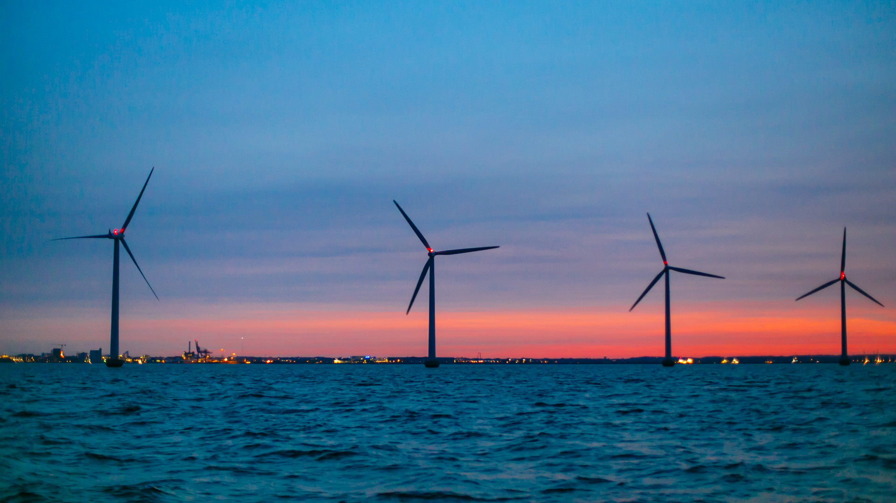

A szélenergia a levegő mozgási energiáját jelenti. Ezen energiát az emberiség már régóta hasznosítja különböző energiaátviteli-módszerek segítségével. A vitorlás hajók mellett a legöregebb ebbe a kategóriába tartozó technológia a szélmalom, amelyben a szélenergia csak mechanikus szerkezetet működtetett és fizikai munkát végzett, mint a gabonaőrlés, vagy a víz szivattyúzása. Ennél modernebb felhasználási formája a szélturbina lapátjainak forgási energiáját alakítja át elektromos árammá. A szélturbinákat ma már ipari méretekben, nagy csoportokban is felhasználják szélfarmjaikon a nagy áramtermelők, de nem ritkák a kis, egyedi turbinákat működtető telepek sem, amelyeknek különösen olyan környezetben veszik nagy hasznát, amelyek távol vannak a nagyfeszültségű elektromos hálózattól, ezért költséges lenne a felhasználás helyéig kiépíteni a vezetékeket.
